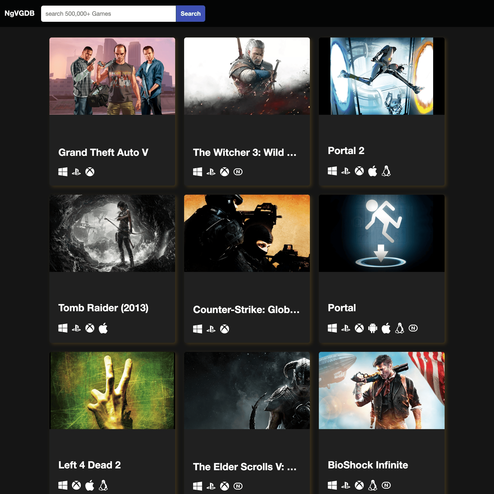

Angular 16 & RapidAPI
The Video Game Database is an in-depth, comprehensive project created using the advanced features of Angular 16. This project effectively demonstrates the capability to set up an Angular application from scratch using Angular CLI, a powerful tool that enables the easy creation, management, and development of Angular applications.
In the pursuit of creating a functional game database website, this project leverages the public API from RapidAPI. This API is critical in providing the necessary data to populate the database with a wide variety of game information. It demonstrates the practical application of making HTTP calls to fetch data from a server, a common task in many web applications.
One of the cornerstones of this project is the use of Angular components, modular and reusable pieces of code that control a part of the user interface. The project illustrates the creation of these components to build a complex, interactive user interface.
Moreover, this project also exhibits the implementation of HTTP interceptors. These are a way to intercept and handle HTTP requests and responses from your application to the server. They are particularly useful for handling errors, caching requests, adding authorization tokens, among other things.
The Video Game Database also showcases the creation and use of Angular services. Services in Angular are a great way to share information among classes that don't know each other. Here, they're used to share game data between components, demonstrating a practical use of dependency injection, a core feature of Angular.